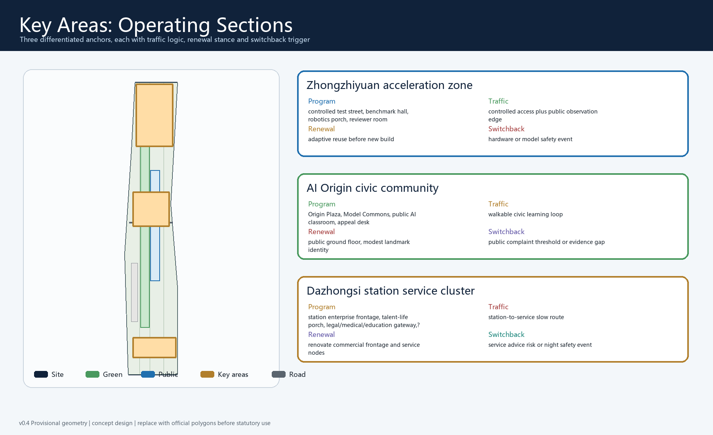
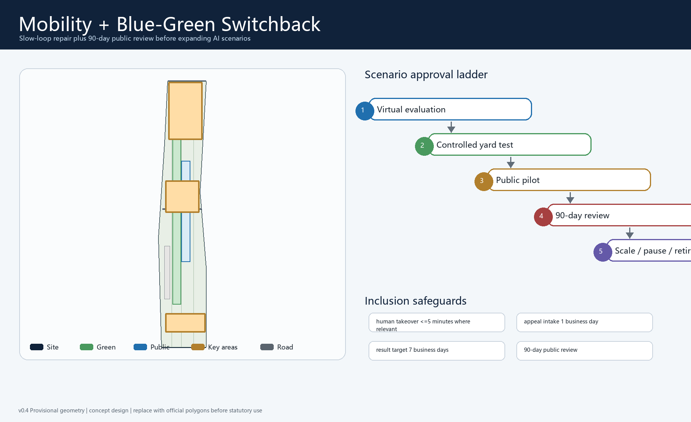

三层范围

指标
重点区域
众智园AI 原点大钟寺三处重点区形成“测试—公共—企业服务”序列。
AI+ 场景

风险说明
不声明官方批准、容积率、高度、权属、道路红线或市政工程结论；official polygons 发布后必须替换并重算全部指标。
总览地图
以京张遗址公园为公共智脊，串联众智园、AI 原点社区、大钟寺与轨道慢行节点。

用地分区
强调 AI 研发、公共服务、文化展示、人才生活与开放空间混合组织。
交通慢行
围绕轨道站点、五道口、清华东路西口和大钟寺联系修复慢行断点。

蓝绿公共空间
把京张遗址公园、小月河场景翼、口袋广场和 AI 公共学习节点组织为连续开放界面。
建筑
坚持保留、更新、拆除和新建分类；建筑基底指标仅作概念校准。

更新项目
分为边界数据补全、慢行断点修复、场景沙盒、公共服务节点和长期运营。
AI 场景
包括步行友好 copilot、站点导引、公共安全复核、遗产导览和企业服务 copilot。
核心指标
本页以 data-metric 和 data-value 标注，并与 metrics.json 的三项核心指标对齐。
任务覆盖
由 compliance_matrix.json、standard_matrix.json 和 design_depth_matrix.json 记录全量覆盖。
自检状态
deterministic validation、spatial review、professional evidence review 已由本地脚本复核，provisional key areas 保留警示。
来源
来源以 data/source_registry.json 和本提交 sources.json 为准，不升级 provisional-only 资料。
假设
official polygons、控规条件、道路红线、权属、市政和文保均待补，发布后重算。
v0.2 Review Response
Added brand system, three-area/two-wing loop, six reference mechanisms, 12 scenario governance cards, 3 industrial tests, 3 landmark concepts, component kit, operations calendar, rights ledger, bilingual check and inclusion responses.
v0.3 Score Repair Evidence
Added six spatial prototypes, 12 work packages, global case transfer table, ecosystem mechanism map, inclusion matrix, culture kit, key-area operating sections and score-repair map. These are concept-only and preserve provisional-boundary warnings.
v0.6 ????????
???????????????????????? civic operating system?AI ?????12 ?????????????? cannot-support ??????????????????? civic-spine-claim-provenance-audit.json?civic-spine-delivery-audit-result.json?self_check.json?metrics.json ? GeoJSON??????????????gallery publication ??????
???
run-civic-spine-claim-provenance.js --check?10/10 visible claims PASS?
???
run-civic-spine-delivery-audit.js --check?12/12 scenarios?12/12 packages?3/3 sections?6/6 inclusion groups PASS?
???
4/4 negative fixtures ?????? human takeover?privacy?pause trigger ? professional interface ?????
v0.5 ?????
?? claim provenance ? delivery audit ???? runner?10/10 ?? claim?12/12 ????12/12 ????3/3 ??? operating section?6/6 ????? 4/4 negative fixtures ? PASS??????????????????????????????????????